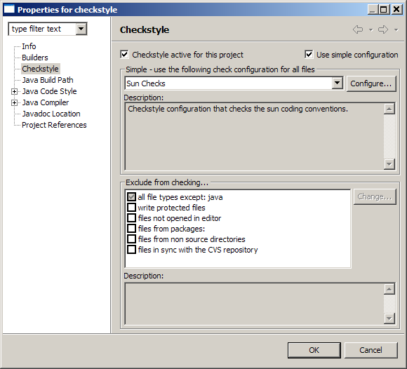

-- Writing a custom plug-in filter --
As you surely know by now, the Eclipse Checkstyle Plug-in sports filters to exclude files
from the checks.
These filters are available on the plug-ins project properties
page.

If filters are activated for a project they exclude certain files of the project
from the checks based on their specific implementation.
Many useful filters are already coming with the
plug-in distribution.
However you may need to implement other filters that are very
specific to your environment.
To enable you to write your own filters the plug-in defines an extension point for
filters com.atlassw.tools.eclipse.checkstyle.filters.
To define and write your own
filter you need to know how the Eclipse plug-in extension scheme works.
Please
understand that we can hardly give you a tutorial on how Eclipse plug-ins are
developed.
The target is to provide a so called fragment, that extends the plugin
in some points (through the extension points) but is no full plugin by itself. How to
create a feature is explained here.
Example:
Using the com.atlassw.tools.eclipse.checkstyle.filters
extension point in your fragment.xml
<extension
id=
"checkstyle.CheckstyleFilters"
point=
"com.atlassw.tools.eclipse.checkstyle.filters"
>
<filter
name=
"%WriteProtectedFilter.label"
internal-name=
"WriteProtectedFiles"
description=
"%WriteProtectedFilter.description"
class=
"com.atlassw.tools.eclipse.checkstyle.projectconfig.filters.WriteProtectedFilter"
>
</filter>
</extension>
The filter implementation class must implement the com.atlassw.tools.eclipse.checkstyle.projectconfig.filters.IFilter
interface.
To make life a bit easier for you there is the com.atlassw.tools.eclipse.checkstyle.projectconfig.filters.AbstractFilter
class which implements already most of the filter interface.
A simple filter implementation (like WriteProtectedFilter)
looks like this:
public class
WriteProtectedFilter
extends
AbstractFilter
{
/**
*
@see
IFilter#accept(java.lang.Object)
*/
public
boolean
accept(Object element)
{
boolean
passes =
true
;
if
(element
instanceof
IResource)
{
passes = !((IResource)
element).isReadOnly();
}
return
passes;
}
}
We hope you get the idea.
To get further insight how this stuff is working we
recommend looking into the plug-ins sources as all filters coming with the plug-in are
using this mechanism too.
|